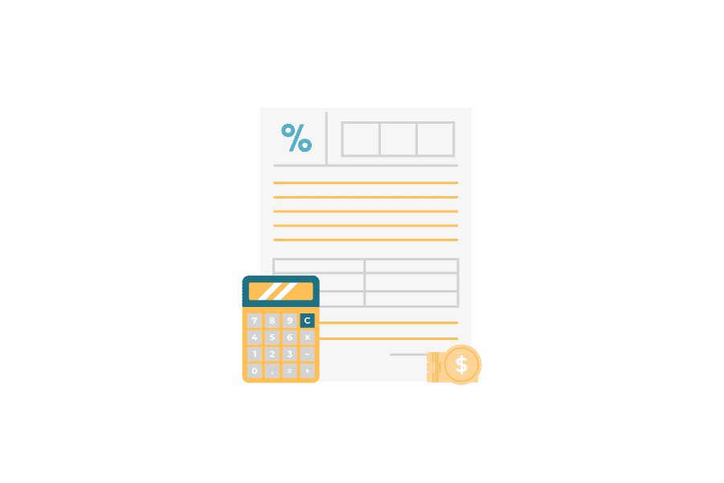

お問い合わせ
お問い合わせリベルクラフト法人向け研修サービス
ChatGPT・
生成AI活用講座
自社の生産性を向上してDXを推進する
Hot Topic
ChatGPT・AI活用における、
よく聞く話
巷で話題になっているが実際に触っていない・業務活用性まで深く考えられていない・
AIの基礎知識がないから詳しくは分からない、といった課題感を解決したいはずです。
Pattern
01
話には聞くが、実際に試したり、
業務活用性を考えたことはない
-


そうですね!実際に触ってみました。 文章がどんどん生成されて凄いですね
-
なるほど、業務や自社ビジネスなど、 実務に対しては、どう使えそうなの?!
-
そこまではちょっと良くわからないですね。。。
-
面白いだけに留まってしまうね。。。
Pattern
02
AIに関する基礎知識がないから、
上辺の理解に留まってしまう
-
ChatGPTってたまに間違ったことを言うんだけど、なんで??
-
うーん、AIも完璧だからではないからですかね、正直良くわかりません。.
-
あと、トークン数とかランダム性とかって、どういうこと?
-
正直、中身のことはよくわかっていないので、なんとも。。。
-
困るなぁ。。。
Reason
組織において
ChatGPT・AI活用を
する意義とは?
ChatGPTや生成AIは、人間のこれまでの作業や創作活動の効率化・時短化に
大きく貢献しうるものであり、うまく活用することで、企業の生産性の向上に繋がる可能性が高くなります。
How to success
組織において
ChatGPT・AI活用を
成功させるために
自社でChatGPTの活用を成功させるためには、「適切なChatGPT活用力」
「自社・自業務での活用可能性の模索」「AIの基礎知識力の向上」といったことが重要な要素となりえます。
現在

業務の生産性向上はできない...
-
ChatGPTのニュースはよく見る...

実際に使えない。
-
ChatGPTを使うことしかできない...
自社の生産性は上がらない。
-
AIの基礎知識がない...
情報のアップデートについていけない
理想
自社の生産性を確実に向上!!!
-
ChatGPTを適切に動かすことができる!
作業の効率化に確実に繋がる
-
ChatGPTの適用可能性がわかる!
自社の生産性が上がる
-
AIの基礎知識が身に付く!
自走力・応用力のある活用スキルへ
Feature
本カリキュラムの特徴
組織でのChatGPT活用の促進・基礎教養としてのAI知識獲得に向けて、
弊社がご提供できるカリキュラムでは、主に以下のような特徴・強みをもっております。
学んですぐに実務で使える、
ChatGPT・生成AIの活用スキルを鍛える!
学んですぐに実務で使える、
ChatGPT・生成AIの
活用スキルを鍛える!
-
実務で使えるChatGPT活用スキルを、
2時間〜12時間(1回〜6回)で学べる -
データサイエンティストによるカリキュラム
だから、AIの基礎知識まで身につく
-
01
AI人材の データサイエンティスト がカリキュラム設計
-
02
原理原則から理解して、 一生モノの知識を獲得
-
03
現場・実務で活用するための
ケーススタディを通じ、 自社業務改善に繋げる
Target
想定の受講対象者
様々な業務を担当するビジネスパーソンに必要な、hatGPT・生成AIを学ぶカリキュラムとなっており、
主に下記のような受講者がターゲット層として想定されます。
こんな方にお勧め
-
経営者・管理職(マネージャー)
- ・生成AIにより業務効率を高めDX推進を加速させたい
- ・AI導入により、企業戦略の新しい方向性を考えたい
-
営業職
- ChatGPT活用で顧客対応スピードを向上させたり、トークスクリプト作成の精緻化をしたい
-
企画職・マーケター
- ・効果的な広告等のキャッチコピーを自動生成したい
- ・生成AIによる市場調査で各種企画を効率化したい
-
CS(カスタマーサクセス)
- AIチャットボットでカスタマーサービスの効率を向上させ、顧客満足度を高めたい
-
バックオフィス職
- 生成AIを用いて、業務報告やドキュメント作成や、業務プロセスを自動化し、作業効率を上げたい
-
開発者・デザイナー
- ChatGPTや生成AIにより、コードやデザイン画像を自動生成して開発工数を削減したい
Curriculum
授業内容の全体像
ChatGPTの活用イメージを膨らませながら、AIに関する基礎知識を土台として身に付けて、
実務でChatGPT・AIをどう活用するかまで考えることができるカリキュラムとなっています。
Plan
授業内容の全体像
本カリキュラムでは、以下3パターンのプランをご用意しております。
| 梅 プラン | 竹 プラン | 松 プラン | |
|---|---|---|---|
| 講義回数 | 計1回×2時間 | 計3回×2時間 | 計6回×2時間 |
| 授業範囲 | ChatGPT 超速座学講座 |
ChatGPT・AIの 基礎知識を学ぶ講座 |
座学+演習の フルパッケージ講座 |
| 想定対象者 授業スコープ |
|
|
人材開発支援助成金の |
Flow
お申込みから学習開始
までの流れ
本コースのご受講を希望される方は、下記の流れに沿って受講開始していただきます。
-
01
申請のお申込
助成金申請をご希望の方は、弊社担当者とともに、各種書類をご用意いただく必要があります。書類を用意の上、申請手続きをし、申請採択を受領し次第、受講手続きをいたします。
-
02
受講準備
受講開始に向けて準備をいたします。主に、御社コミュニケーションツールを通じた受講資料のご連携や受講生と授業日程の確定が必要となります。
-
03
受講開始!
受講を開始いたします。受講中は、御社のコミュニケーションツールにて無制限に質問対応をいたします。予習や復習は、各自にてお願いいたします。
-
04
受講終了
受講が終了した月の翌月お支払いにてご請求をいたします。助成金をご利用の企業様は、受講が無事終了し次第、助成金受取の手続きをお願いいたします。 なお、教材は半永久的にご利用いただいて大丈夫です。

Contact
お問い合わせフォーム
お問い合わせ後、弊社担当よりご連絡を差し上げます。
日程調整の上、オンラインでのお打ち合わせを設定いたします
すぐに日程調整をして打ち合わせ希望の方は、
以下よりご予約が可能です
とりあえずメールで連絡したい！という方は、
こちらの連絡先に、何でもご気軽にお問合せください
最近、ChatGPTのニュースや記事が多いよね!実際に試してみた?!!